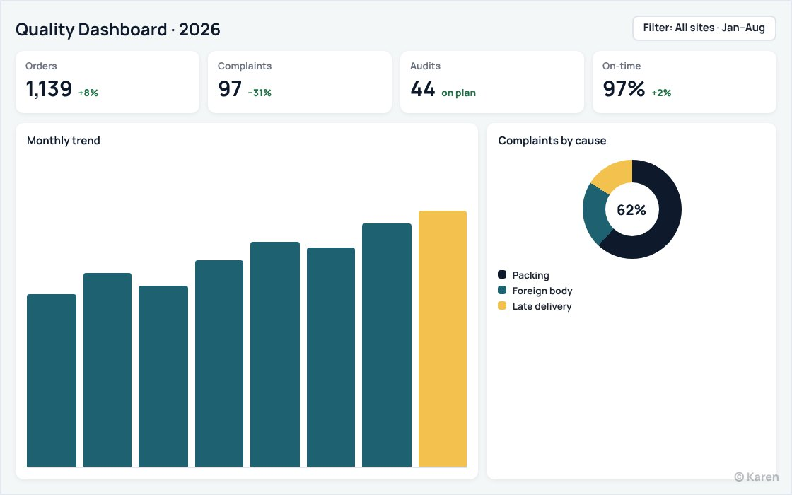
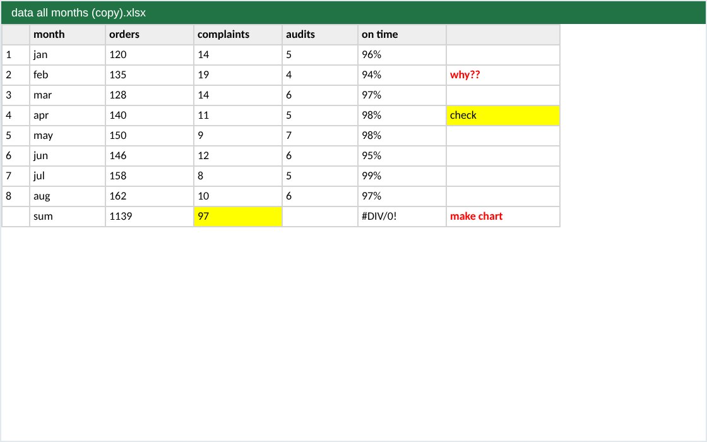

Before and after
Drag to compare


Watch me work on it


Packages
Fixed price. No extra fees.
Starter1 automated sheet
Market price $150Save 47%
$80
Within 24 hours- I suggest the easiest setup
- Unlimited revisions
- Editable source file + PDF
- Pay after a watermarked preview
Most chosenStandardFull workbook
Market price $280Save 50%
$140
Within 24 hours- I suggest the easiest setup
- Dashboard
- Unlimited revisions
- Editable source file + PDF
- Pay after a watermarked preview
PremiumLinked files system
Market price $450Save 51%
$220
Within 2 days- I suggest the easiest setup
- Dashboard
- Short how-to guide
- Unlimited revisions
- Editable source file + PDF
- Pay after a watermarked preview
Compare packages
| Starter | Standard | Premium | |
|---|---|---|---|
| Size | 1 automated sheet | Full workbook | Linked files system |
| Delivery | Within 24 hours | Within 24 hours | Within 2 days |
| My price | $80 | $140 | $220 |
| I suggest the easiest setup | ✓ | ✓ | ✓ |
| Dashboard | — | ✓ | ✓ |
| Short how-to guide | — | — | ✓ |
| Unlimited revisions | ✓ | ✓ | ✓ |
| Editable source file + PDF | ✓ | ✓ | ✓ |
| High-quality images and icons | ✓ | ✓ | ✓ |
| Your colours, fonts and logo | ✓ | ✓ | ✓ |
| Checked 3 times | ✓ | ✓ | ✓ |
| Pay after a watermarked preview | ✓ | ✓ | ✓ |
Questions
Do I pay before I see anything?
No. You see your file with a watermark first. You pay, then you get the clean files.
How many changes can I ask for?
As many as you need on the same order, until you are happy.
What files do I get?
The editable source file (PPTX, DOCX or XLSX) and a PDF.
Is my file kept private?
Yes. I never show client files. Every sample here is my own concept design.
What time zone do you work in?
{tz}. I’m online 9:00–23:00 my time, and every delivery date on this site is shown in your own time.
Send me your file.
You get a fixed price and a delivery time first.
Online nowI reply myself in 15–30 minutes